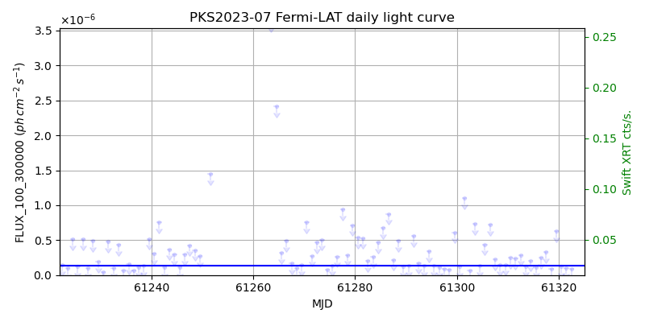
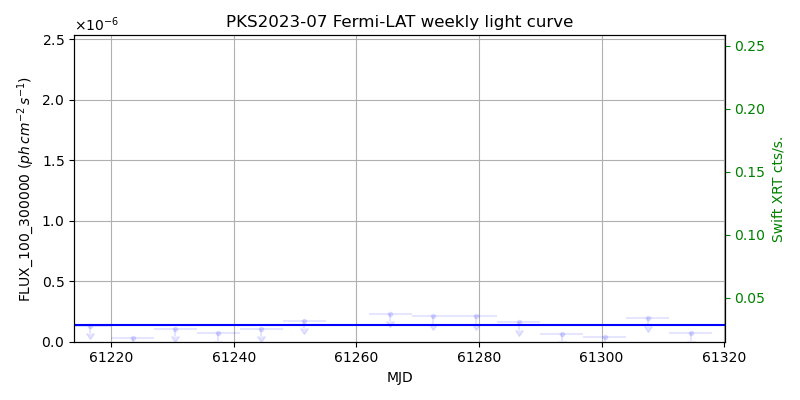
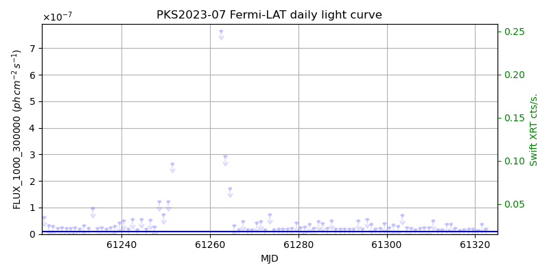
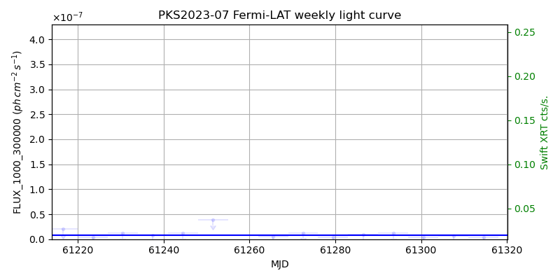

LAT Lightcurve site: https://fermi.gsfc.nasa.gov/ssc/data/access/lat/msl_lc/source/PKS_2023-07
Swift site: https://www.swift.psu.edu/monitoring/source.php?source=PKS2023-07
NED: Query
Time of last update of this page: UT: 2026-10-10 15:27 (MJD: 61323.644)
| Property | Value |
|---|---|
| R.A. | 20:25:40.56 |
| Dec. | -7:35:52.8 |
| z | 1.388 |
| 3FGL SpectrumType | LogParabola |
| 3FGL PL Index | |
| 3FGL Flux_100_300000 | 1.38e-07 1 / (s cm2) |
| 3FGL Flux_1000_300000 | 8.32e-09 1 / (s cm2) |
| 3FGL Flux >200 GeV | 1.15e-12 1 / (s cm2) |
| 3FGL Extrap. Crab >200 GeV | 0.00 |
| 3FGL Flux After EBL Absorption >200GeV | 4.52e-15 1 / (s cm2) |
| 3FGL EBL Crab Fraction >200GeV | 0.00 |

| MJD | dMJD | Flux | dFlux | Frac3FGL | FracCrab>200GeV | EBLFracCrab>200GeV |
|---|---|---|---|---|---|---|
| 61318.50 | 0.50 | 8.92e-08 | 0.00e+00 | 0.00 | 0.00 | 0.00 |
| 61319.50 | 0.50 | 6.27e-07 | 0.00e+00 | 0.00 | 0.00 | 0.00 |
| 61320.50 | 0.50 | 1.24e-07 | 0.00e+00 | 0.00 | 0.00 | 0.00 |
| 61321.50 | 0.50 | 1.03e-07 | 0.00e+00 | 0.00 | 0.00 | 0.00 |
| 61322.50 | 0.50 | 8.73e-08 | 0.00e+00 | 0.00 | 0.00 | 0.00 |

| MJD | dMJD | Flux | dFlux | Frac3FGL | FracCrab>200GeV | EBLFracCrab>200GeV |
|---|---|---|---|---|---|---|
| 61286.50 | 3.50 | 1.59e-07 | 0.00e+00 | 0.00 | 0.00 | 0.00 |
| 61293.50 | 3.50 | 6.77e-08 | 0.00e+00 | 0.00 | 0.00 | 0.00 |
| 61300.50 | 3.50 | 3.79e-08 | 0.00e+00 | 0.00 | 0.00 | 0.00 |
| 61307.50 | 3.50 | 1.97e-07 | 0.00e+00 | 0.00 | 0.00 | 0.00 |
| 61314.50 | 3.50 | 6.85e-08 | 0.00e+00 | 0.00 | 0.00 | 0.00 |

| MJD | dMJD | Flux | dFlux | Frac3FGL | FracCrab>200GeV | EBLFracCrab>200GeV |
|---|---|---|---|---|---|---|
| 61318.50 | 0.50 | 1.94e-08 | 0.00e+00 | 0.00 | 0.00 | 0.00 |
| 61319.50 | 0.50 | 1.93e-08 | 0.00e+00 | 0.00 | 0.00 | 0.00 |
| 61320.50 | 0.50 | 1.54e-08 | 0.00e+00 | 0.00 | 0.00 | 0.00 |
| 61321.50 | 0.50 | 3.86e-08 | 0.00e+00 | 0.00 | 0.00 | 0.00 |
| 61322.50 | 0.50 | 1.93e-08 | 0.00e+00 | 0.00 | 0.00 | 0.00 |

| MJD | dMJD | Flux | dFlux | Frac3FGL | FracCrab>200GeV | EBLFracCrab>200GeV |
|---|---|---|---|---|---|---|
| 61286.50 | 3.50 | 8.73e-09 | 0.00e+00 | 0.00 | 0.00 | 0.00 |
| 61293.50 | 3.50 | 1.16e-08 | 0.00e+00 | 0.00 | 0.00 | 0.00 |
| 61300.50 | 3.50 | 3.93e-09 | 0.00e+00 | 0.00 | 0.00 | 0.00 |
| 61307.50 | 3.50 | 6.41e-09 | 0.00e+00 | 0.00 | 0.00 | 0.00 |
| 61314.50 | 3.50 | 3.43e-09 | 0.00e+00 | 0.00 | 0.00 | 0.00 |
--------------------------------------------------------- Using user-supplied coords: 20:25:40.56 -7:35:52.8 2000 --------------------------------------------------------- FLWO UT night of: 2026-10-11 Local Sid. @ Midnight: 00:55 Sunset (-15.0) (local, UT): 19:04 02:04 Sunrise (-15.0) (local, UT): 05:18 12:18 Moonrise (local, UT): Moonset (local, UT): Moon phase: 0.01 --------------------------------------------------------- AzTime LSID UT Obj_el Obj_az Mn_el Mn_az Sep. --------------------------------------------------------- 19:04 19:58 02:04 50.3 169.0 -16.1 264.2 105.6 19:34 20:29 02:34 50.8 180.8 -22.3 267.8 105.3 20:04 20:59 03:04 50.1 192.4 -28.5 271.5 105.0 20:34 21:29 03:34 48.1 203.4 -34.7 275.4 104.7 21:04 21:59 04:04 45.1 213.3 -40.8 279.7 104.4 21:34 22:29 04:34 41.2 222.0 -46.8 284.6 104.0 22:04 22:59 05:04 36.6 229.6 -52.7 290.5 103.7 22:34 23:29 05:34 31.5 236.1 -58.4 297.7 103.4 23:04 23:59 06:04 26.0 241.9 -63.6 307.3 103.0 23:34 00:29 06:34 20.2 247.0 -68.1 320.3 102.7 00:04 00:59 07:04 14.3 251.7 -71.3 338.2 102.3 00:34 01:29 07:34 8.2 256.0 -72.6 0.4 102.0 01:04 01:59 08:04 2.1 260.0 -71.5 22.7 101.6 01:34 02:30 08:34 -3.2 264.0 -68.3 40.8 101.2 02:04 03:00 09:04 -10.9 267.9 -63.9 54.1 100.9 02:34 03:30 09:34 -17.3 271.8 -58.7 63.8 100.5 03:04 04:00 10:04 -23.7 275.9 -53.1 71.2 100.2 03:34 04:30 10:34 -30.1 280.3 -47.3 77.2 99.9 04:04 05:00 11:04 -36.3 285.2 -41.4 82.2 99.5 04:34 05:30 11:34 -42.4 290.8 -35.3 86.6 99.2 05:04 06:00 12:04 -48.2 297.4 -29.2 90.6 98.9 05:18 06:14 12:18 -50.7 300.8 -26.5 92.4 98.8 --------------------------------------------------------- Source never above horizon of 55.0 deg. Dark hours >55 deg.: 0.00